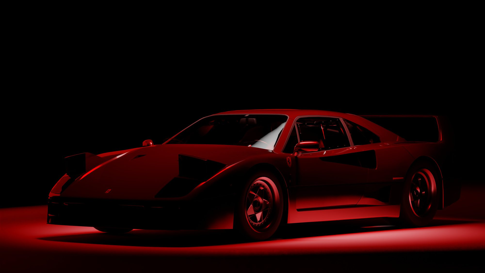
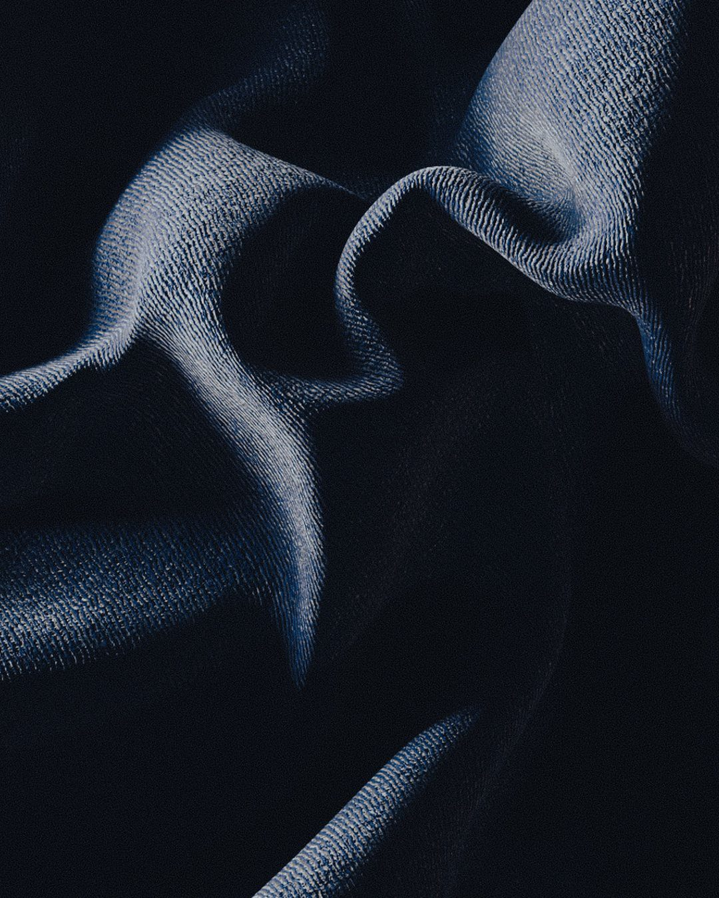
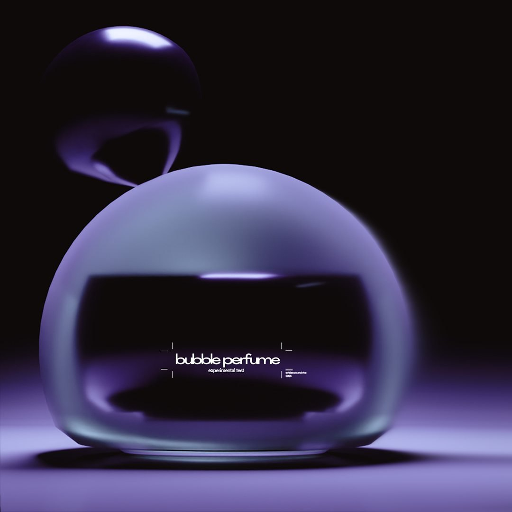
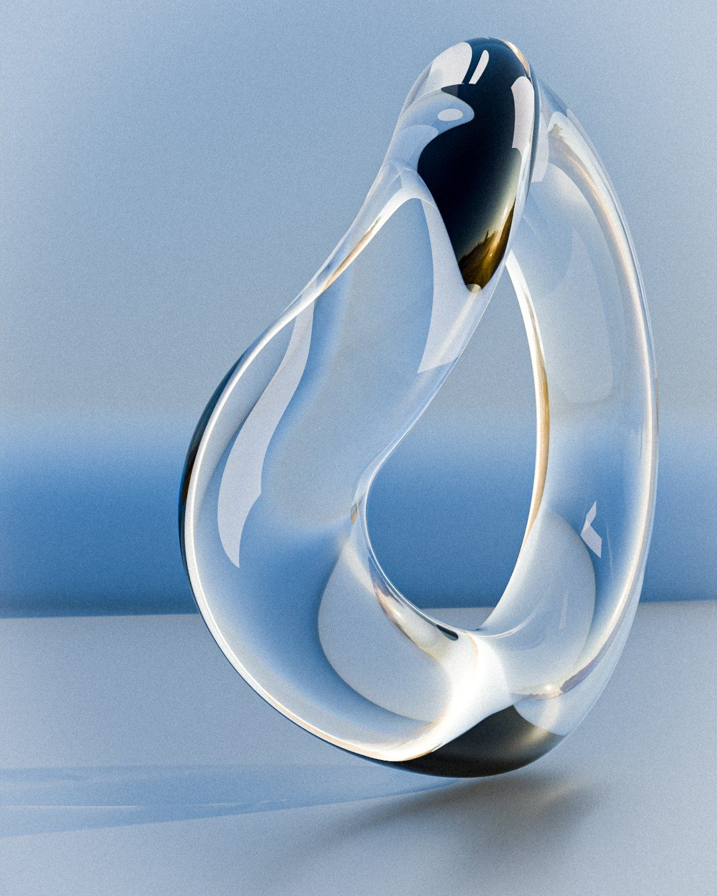
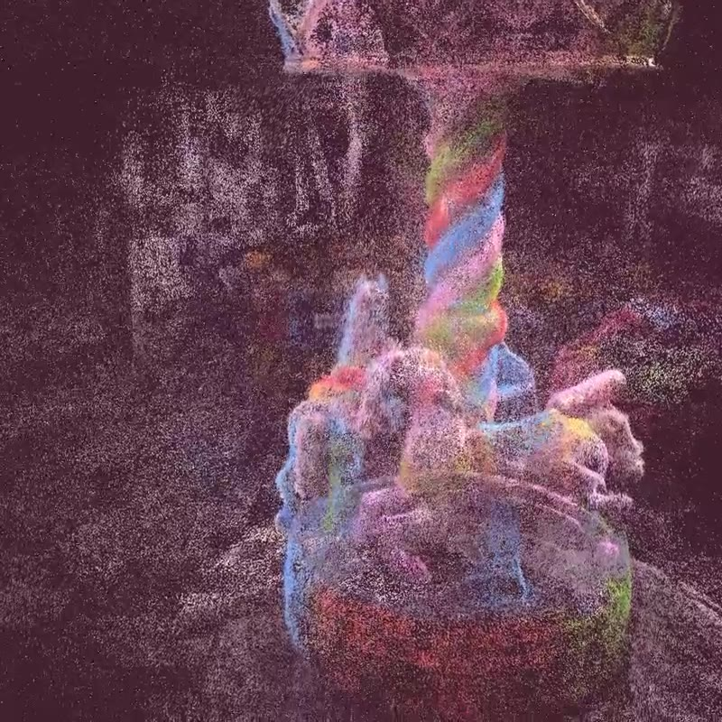

Evidence Studio





Services
The studio
Evidence Studio
Art direction, CGI & sound — moving images with intent.
Evidence Studio is an independent creative practice working across CGI, art direction and sound design. We build moving images that carry weight — deliberate, cinematic, engineered to be remembered.
We believe great work leaves a trace. Every frame, every cut, every sound is evidence of intention.
We collaborate with brands and founders who understand that motion is not decoration — it is argument.
Get in touch
evidencestudiocontact@gmail.com